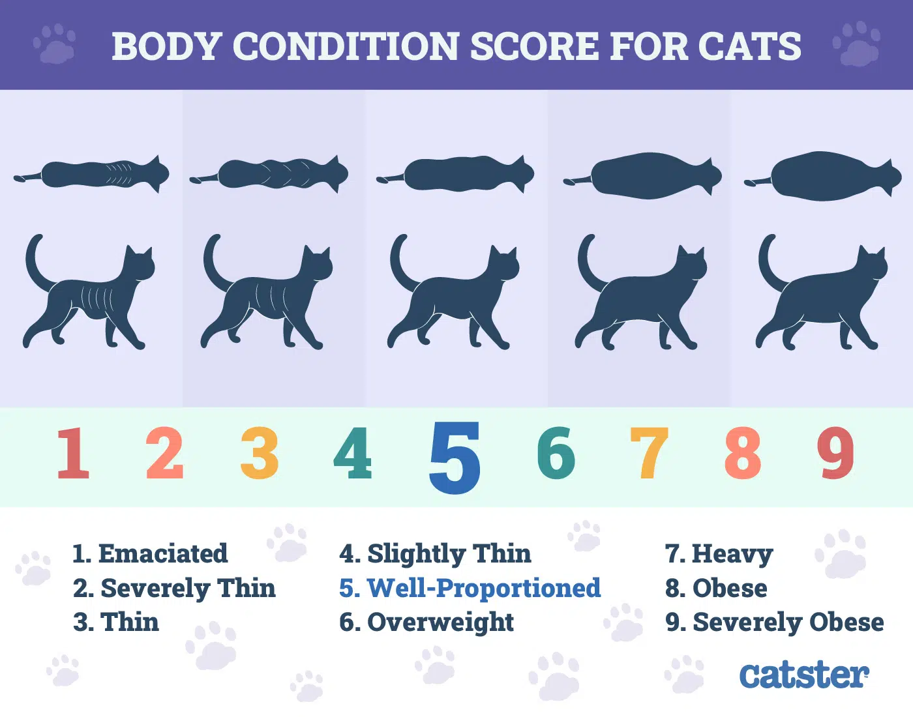

The Body Condition Score (BCS) is a quantitative method for evaluating body fat. Think of it as the animal equivalent of the Body Mass Index (BMI) for humans. The BCS is a tool used for measuring the ideal weight of our pets. Almost 60% of domestic cats are considered overweight! Read on to learn more about the BCS and how you can use it to determine the condition of your cat.
Types of Body Condition Scores for Cats
There are two recognized BCS scales: one ranging from one to nine and the other from one to five. Both scales operate on the same principle. The ideal weight is given in the middle, so 4 and 5 on the nine-point scale or 3 on the five-point scale. Cats scoring below (one or two on the five-point scale or one, two or three on the nine-point scale) are considered underweight. Cats with values above the ideal weight (four or five on the five-point scale or six, seven, eight or nine on the nine-point scale) carry excess weight.
Meaning of each number on the nine-point scale
- 1-2 (Very Thin): Ribs, spine and hip bones are visible. Fat can not be seen or felt under the skin. Obvious loss of muscle mass.
- 3-4 (Thin): Ribs can be felt easily and may be visible. Slight abdominal tuck and noticeable waistline behind the ribs.
- 5 (Ideal): Ribs are easily felt but not visible; there's a clear waist when viewed from above and a slight abdominal tuck when viewed from the side. Fat can be felt around ribs, spine and hip bones.
- 6-7 (Overweight): Ribs, spine and hip bones are not visible and difficult to feel. Excess fat is felt around ribs, spine and hip bones. Waist and abdonminal tuck are minimal or absent.
- 8-9 (Obesity): Ribs, spine and hip bones are difficult to feel under thick layer of fat. Waist and abdomen distended when viewed from above and side. Prominent fat deposits over lower spine, neck and chest.